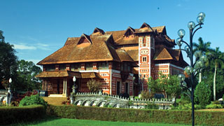

Geography

Kerala is divided into three geographical regions: Highlands, which slope down from the Western Ghats onto the Midlands of undulating hills and valleys into an unbroken 580 km long coastline with many picturesque backwaters, interconnected with canals and rivers. The wild lands are covered with dense forests, while other regions lie under tea and coffee plantations or other forms of cultivation. Most of the state is engulfed in rich greenery which ensures a very calming experience at all times.
Seasons

Bestowed with a pleasant and equable climate throughout the year, Kerala is a tropical land where one can relax and be at ease. The Monsoons (June-September and October-November) and summer (February-May) are the seasons markedly experienced here, while Winter is only a slight drop in temperature from the normal range of 28-32°C. The generally pleasant climate prevalent here is what our guests end up loving.
People and Life
Kerala is one of India's most progressive states in terms of social welfare and quality of life. The State boasts of one of India's highest literacy rates, highest life expectancy and lowest child mortality rates. The literacy rate for women in Kerala is one of the highest in all of Asia. Enjoying a unique cosmopolitan viewpoint, the people here, at all levels of society, have greater access to services and opportunities - as well as a greater say in their governance.
History
Kerala's history is closely linked with its commerce, which until recent times revolved around its spice trade. Celebrated as the Spice Coast of India, ancient Kerala played host to travellers and traders from across the world including the Greeks, Romans, Arabs, Chinese, Portuguese, Dutch, French and the British. Almost all of them have left their imprints on this land in some form or the other and that has helped us mould and design our own special way of interacting with the world.